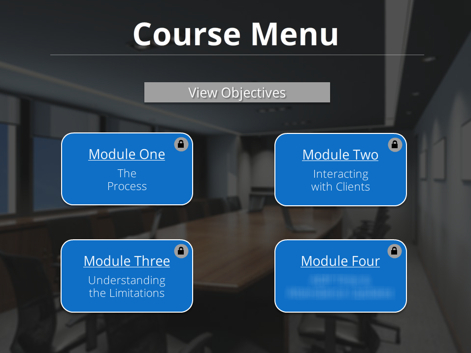
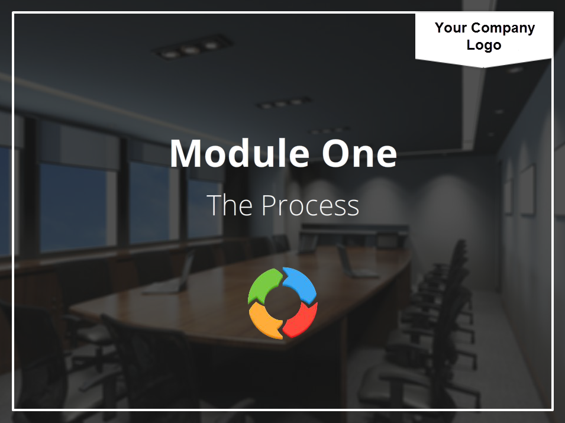
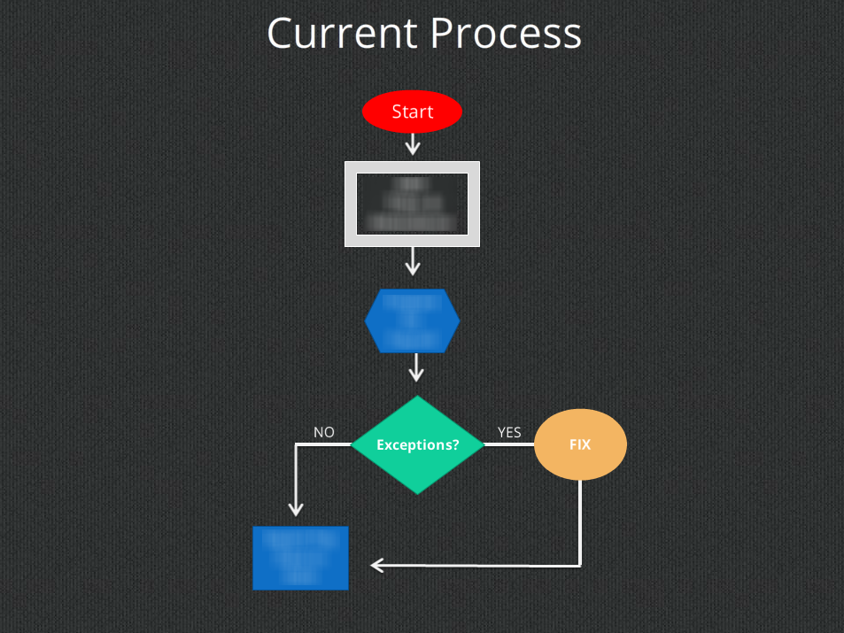
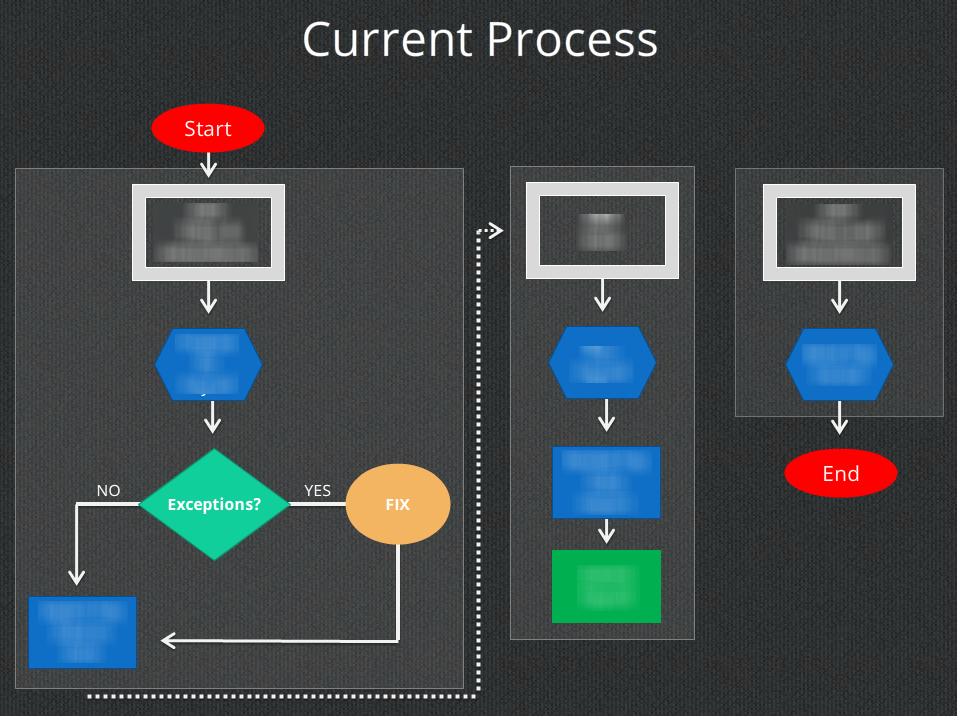
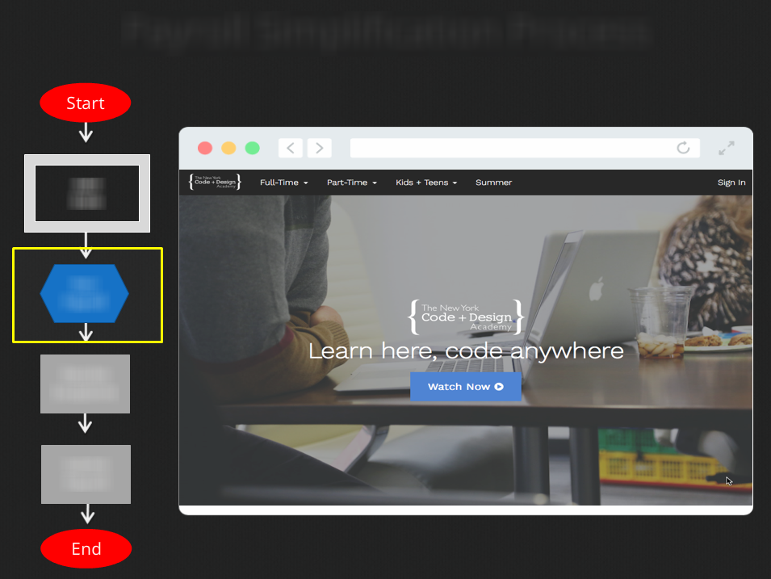
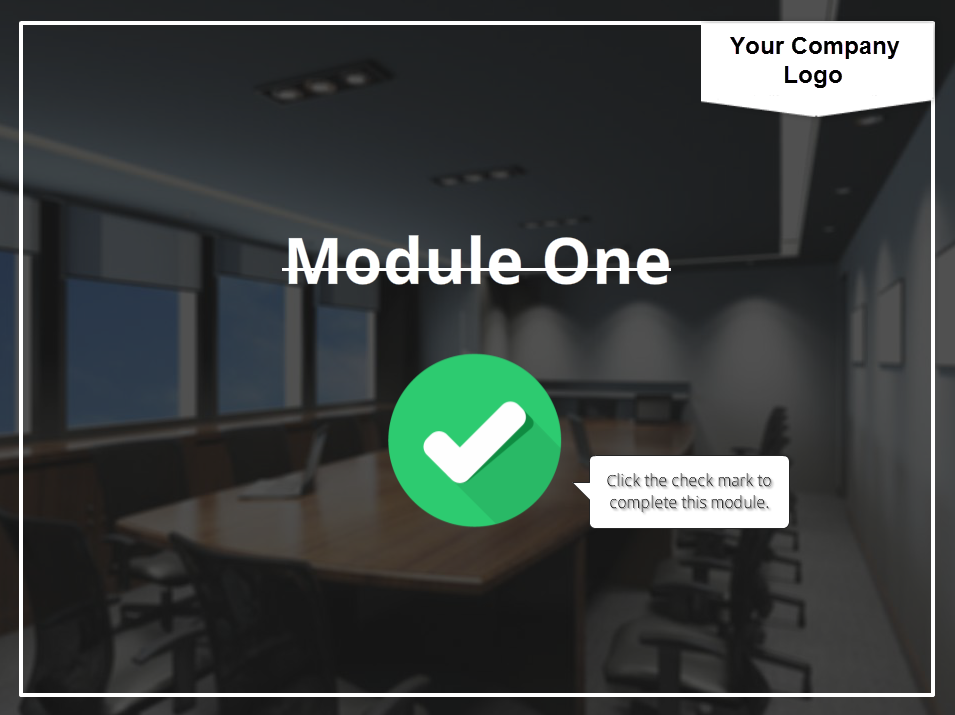

This was the main course menu, where participants accessed the training modules. Modules were locked until the previous module was completed.
This was one of the module divider slides.
This was a process flowchart, which moved as the steps progressed, as seen...
...here.
A demo of each step was displayed within the browser window image.
This was the module completion slide. After clicking the checkmark, participants were brought back to the main course menu.
Thanks for viewing!